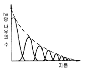
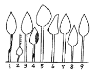
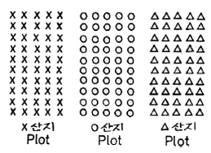
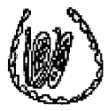

임업종묘기사 (2009-07-26 기출문제)
1과목: 조림학
1. 토양층위를 O, A, B, C, R층으로 구분했을 때 빗물이 아래로 침전하면서 부식질·점토·철분·알루미늄 성분 등을 용탈하여 내려가다가 집적해 놓은 토양층은?
- Ao층
- A층
- B층
- C층
(정답률: 알수없음)

2. 산림 작업의 하나의 체계에 해당하는 숲이 다음과 같은 구조로 나타날 경우 어떻게 해석할 수 있는가?

- 동령림으로 구성되어 있는 삼림
- 순환벌채를 받고 있는 택벌림
- 벌채를 받은 일이 없는 삼림
- 우리나라 소나무 숲에 흔히 나타나고 있는 구조
(정답률: 알수없음)
3. 수목의 줄기를 구성하는 다음 조직 중에서 수분이 이동하는 주요 통로가 존재하는 곳은?
- 수(pith)
- 목부(xylem)
- 사부(phloem)
- 형성층(cambium)
(정답률: 알수없음)
4. 수목은 토양의 무기양료가 부족하면 여러 가지 생리반응이 나타난다. 잎의 황화현상(chlorosis)을 일으키는 무기양료가 아닌 것은?
- N
- Mg
- Fe
- Cl
(정답률: 알수없음)
5. 간접적 지위평가법에 해당되지 않는 것은?
- 구간법
- 지표식물에 의한 접근
- 지위지수
- 점밀도법
(정답률: 알수없음)
6. Moller의 항속림사상의 강조 내용으로 옳게 설명한 것은?
- 정해진 윤벌기에 군상목택벌을 원칙으로 한다.
- 항속림은 이령혼효림이다.
- 벌채목의 선정은 산벌작업의 선정기준에 준해서 한다.
- 갱신은 인공갱신을 원칙으로 한다.
(정답률: 알수없음)
7. 침엽수종 중 삽목 발근이 용의한 수종은?
- 연필향나무
- 잣나무
- 낙엽송
- 전나무
(정답률: 알수없음)
8. 임목의 개화결실을 촉진시키는 방법으로 잘못된 것은?
- 수관의 울폐
- 시비
- 호르몬 사용
- 환상박피
(정답률: 알수없음)
9. 1년생 소나무류 묘목을 판갈이(상체작업)할 때 1m2에 대개 어느 정도의 밀도(본수)로 심는가?
- 36 ~ 49 주
- 81 ~ 100 주
- 144 ~ 196 주
- 400 주
(정답률: 알수없음)
10. 다음 그림은 데라사끼 수관급(또는 수목급)을 나타낸 것이다. 이중 8번의 나무는 어느 급에 해당하는가?

- 1급목
- 2급목
- 3급목
- 4급목
(정답률: 알수없음)
11. 지하 자엽형으로 발아하는 수종으로만 짝지어진 것은?
- 소나무, 잣나무
- 아까시나무, 버즘나무
- 밤나무, 칠엽수
- 단풍나무, 물푸레나무
(정답률: 알수없음)
12. 제벌에 관한 설명으로 가장 적당한 것은?
- 주로 간벌기에 실시한다.
- 시기는 여름철이 유리하다.
- 미래목제거가 주목적이다.
- 조림지에서는 우량목이 대상이 된다.
(정답률: 알수없음)
13. 우량묘의 조건을 가장 옳게 설명한 것은?
- 가지가 특정한 방향으로 뻗어 발달한 것
- 온도의 저하에 따른 고유의 변색과 광택을 가지고 있을 것
- 발육이 완전하고 조직이 충실하며 측아의 발달이 잘 되어 있는 것
- 지상부보다 지하부의 측근과 세근의 발달이 왕성한 것
(정답률: 알수없음)
14. 제벌작업에 대한 설명으로 옳은 것은?
- 일반적으로 벌채목을 이용한 중간수입을 기대할 수 있다.
- 윤벌기 내에 1회로 작업을 끝내는 것이 원칙이다.
- 소나무나 낙엽송 조림지의 최초 제벌은 흔히 조림 후 10년 이전인 7~8년 만에 실시하는 것이 보통이다.
- 제초제 또는 살목제를 사용할 수 없다.
(정답률: 알수없음)
15. 생가지치기를 하는 경우 상구가 부후하는 위험성이 가장 큰 수종은?
- 소나무류
- 단풍나무류
- 포플러류
- 삼나무
(정답률: 알수없음)
16. 고정생장의 유형에 해당하는 수종은?
- 포플러류
- 낙엽송
- 잣나무
- 은행나무
(정답률: 알수없음)
17. 잣나무 가지치기작업에서 절단부의 직경이 2㎝ 정도이면 융합에 소요되는 연수는?
- 1년 이내
- 2 ~ 3년
- 4 ~ 5년
- 6 ~ 7년
(정답률: 알수없음)
18. 온량지수가 15 이하인 곳의 생물군계를 무엇이라 하는가?
- 열대림
- 온대림
- 아한대림
- 툰드라
(정답률: 알수없음)
19. 종자의 품질을 나타내는 기준인 순량율이 50%, 실중이 60g, 발아율이 90% 라고 할 때, 종자의 효율은?
- 30 %
- 54 %
- 27 %
- 45 %
(정답률: 알수없음)
20. 후숙을 필요로 하지 않는 수종은?
- 아까시나무
- 버드나무류
- 피나무류
- 산수유
(정답률: 알수없음)
2과목: 임목육종학
21. A(♀) × B(♂)일 때는 A에 닮은 형질이 나타나고, B(♀) × A(♂) 일 때는 B에 닮은 형질이 나타날 때, 이것을 무엇이라 하는가?
- 모계 유전
- 부계 유전
- 염색체 유전
- 역교잡
(정답률: 알수없음)
22. 타가수정식물에 대하여 자기수정을 계속했을 경우 일어나는 결과로 틀린 것은?
- homo성이 증가한다.
- 생활력이 증가한다.
- hetero성이 감소한다.
- 2인자 잡종인 경우 종국엔 2개의 genotype으로 구분된다.
(정답률: 알수없음)
23. 잡종강세의 유전적 가설에 대한 설명으로 거리가 먼 것은?
- 이형접합성에 의한 초우성설
- 열성유전자연쇄설
- 유전자의 상가적 효과설
- 염색체 배가로 인한 다배체설
(정답률: 알수없음)
24. 동형핵분열과 이형핵분열에 대한 연결로 관계가 먼 것은?
- 동형핵분열 - 염색체의 종열
- 이형핵분열 - 상동염색체의 분리
- 동형핵분열 - 유사분열
- 이형핵분열 - 염색분체의 분리
(정답률: 알수없음)
25. 상가적 유전분산이 4, 비상가적 유전분산이 1, 환경분 산이 5인 경우에 좁은 의미의 유전력은?
- 0.80
- 0.67
- 0.40
- 0.20
(정답률: 알수없음)
26. 어떤 집단에서 3개의 표본을 얻었는데 그 값이 각각 1, 3, 5 일 때, 분산의 값은?
- 2.0
- 3.0
- 4.0
- 8.0
(정답률: 알수없음)
27. 유효 화분 비산거리를 추정하는데 이용할 수 있는 유전자는?
- 표식 유전자
- 우성 유전자
- 열성 유전자
- 대립 유전자
(정답률: 알수없음)
28. Aa × Aa로 교잡하였을 때 생기는 차대의 표현형의 수는?
- 1
- 2
- 3
- 4
(정답률: 알수없음)
29. 2배체의 소나무는 체세포 한 개의 핵안에 몇 개의 염색채를 가지고 있는가?
- 10
- 12
- 24
- 32
(정답률: 알수없음)
30. 염색체의 기본 2배체와 다른 배수체인 이수체 중에서 이중염색체를 표시한 것은?
- 2n-1
- 2n-2
- 2n+1
- 2n+1+1
(정답률: 알수없음)
31. RNA에만 있는 염기는?
- cytosine
- uracil
- adenine
- thymine
(정답률: 알수없음)
32. 넓은 의미의 유전력에 대한 설명으로 가장 적합한 것은?
- 전체 표현형분산에 대한 유전분산의 비율
- 전체 임목에 대한 수형목의 비율
- 각종 유전특성에 대하여 유전될 수 있는 특성의 비율
- 전체 분산에 대한 표준오차의 비율
(정답률: 알수없음)
33. 교잡종으로 잡종강세를 이용하여 육성된 수종은?
- 테다소나무
- 현사시나무
- 스트로브잣나무
- 양버들나무
(정답률: 알수없음)
34. 산지시험시 동일종에서 남방산의 것은 북방산에 비해 여러 특징을 보이는데 그 중 적합하지 않은 것은?
- 성장이 빠르다.
- 단풍이 아름답다.
- 동해를 받기 쉽다.
- 가을 늦게까지 잎을 가지며 성장한다.
(정답률: 알수없음)
35. 어떤 산지시험의 Plot당 개체수가 50개체인데 이 중 일부만을 택하여 측정하려고 한다. 각 Plot당 개체의 배열이 아래 그림과 같이 되어 있다고 할 때 만일 Plot 내의 각 줄로부터 임의로 2개체씩 모두 10개체를 택한 다면 이경우의 표본 추출방법은?

- 단순 확률표본추출(simple random sampling)
- 집략 표본추출(cluster sampling)
- 계통추출법(systematic sampling)
- 층화 확률표본추출(stratified random sampling)
(정답률: 알수없음)
36. 아래 그림과 같이 정규분포를 나타내는 전체집단 중 일부인 빗금친 부분을 선발하였다. 전체 집단의 평균이 μ 이고 선발된 개체들의 평균이 Xs 일 때, 선발전 집단의 평균치와 선발목의 평균치의 차를 무엇이라 하는가?
- 선발강도
- 유전획득량
- 표준편차
- 선발차
(정답률: 알수없음)
37. 식물의 교잡종에서 과실이나 종피 등이 부계의 영향을 받았을 때 이것을 무엇이라 하는가?
- Chimera
- Xenia
- Apomixis
- Metaxenia
(정답률: 알수없음)
38. 조기검정의 효율을 높이기 위한 요건으로 가장 거리가 먼 것은?
- 환경변이가 큰 형질
- 유전상관이 높은 형질
- 형질의 특징이 조기에 나타나는 형질
- 유전변이가 큰 형질
(정답률: 알수없음)
39. 도입육종시 도입산지를 결정할 때 유의사항으로 상대적으로 중요하지 않은 사항은?
- 원산지와 도입지간 위도의 유사성
- 원산지와 도입지간 기후의 유사성
- 도입대상 수종의 특성과 용도
- 도입수종과 향토수종과의 유전적 유사성
(정답률: 알수없음)
40. 교배방법에 대한 설명으로 틀린 것은?
- 타 개체의 화분과의 수분을 방지하기 위해 교배대를 씌운다.
- 투명한 재질의 교배대는 대 내에물이 고일 확률을 적게하는 장점이 있다.
- 화분의 저장은 수분을 함유한 상태에서 실온에 1년이상 보관한다.
- 교배대는 보통 수분 후 5~7일 후에 제거한다.
(정답률: 알수없음)
3과목: 산림보호학
41. 소나무 시들음병을 일으키는 소나무재선충이 수목 간을 이동하는 경로는?
- 종자전염
- 매개충
- 바람
- 토양전염
(정답률: 알수없음)
42. 흰가루병의 병환부가 흰가루 같이 보이는 것은?
- 흰색의 균사가 자라서 덮는 것이다.
- 표피가 변색되었기 때문이다.
- 2차적으로 침입한 부생균 때문이다.
- 표피면에 형성된 자낭구 때문이다.
(정답률: 알수없음)
43. 밤나무 줄기마름병균 등 자낭균류는 자낭포자와 분생포자(병포자)를 형성한다. 그림과 같은 포자의 명칭은?

- 자좌
- 자낭각
- 병자각
- 자낭반
(정답률: 알수없음)
44. 모잘록병을 방제하기 위한 가장 효과적인 방법은?
- 질소질 비료를 준다.
- 배수와 통풍으로 개선한다.
- 후파를 한다.
- 종자가 늦게 발아하도록 한다.
(정답률: 알수없음)
45. 잣나무 털녹병을 예방하기 위한 가장 중요한 작업은?
- 중간기주의 제거
- 이병목의 제거
- 하예작업
- 약제살포
(정답률: 알수없음)
46. 소나무 혹병의 방제법이 아닌 것은?
- 중간기주인 참나무류 제거
- 병환부나 병든 묘목을 일찍 제거하여 소각
- 배수가 불량한 과습지에 배수구 설치
- 소나무류의 묘목에 4-4식 보르도액 살포
(정답률: 알수없음)
47. 소나무 잎녹병의 중간기주는?
- 향나무
- 등나무
- 황벽나무
- 딱총나무
(정답률: 알수없음)
48. 잣나무 털녹병균의 기주교대를 하는 것은 무엇인가?
- 애기똥풀
- 매발톱
- 참나무류
- 송이풀
(정답률: 알수없음)
49. 대추나무 빗자루병의 발병 원인은?
- 바이러스
- 파이토플라스마
- 선충
- 진균
(정답률: 알수없음)
50. 그을음병을 방제하는데 가장 알맞은 방법은?
- 질소질 비료를 충분히 준다.
- 진딧물과 깍지벌레 등을 구제한다.
- 토양소독을 철저히 한다.
- 종자소독을 철저히 한다.
(정답률: 알수없음)
51. 오동나무 빗자루병의 매개곤충으로 알려진 것은?
- 진딧물
- 마름무늬매미충
- 담배장님노린재
- 끝동매미충
(정답률: 알수없음)
52. 나무좀, 하늘소, 바구미 등과 같은 천공성 해충을 방제하는데 다음 중 가장 적합한 방법은?
- 온도처리법
- 통나무 유살법
- 경운법
- 훈증법
(정답률: 알수없음)
53. 다음 수병 중 산불이 발생한 지역에서 특히 많이 발생할것으로 예측되는 병은?
- 낙엽송 잎떨림병
- 리지나뿌리썩음병
- 잣나무 가지마름병
- 소나무 잎녹병
(정답률: 알수없음)
54. 산림에서 가장 많이 발생하는 산불종류는?
- 지표화
- 수관화
- 지중화
- 수간화
(정답률: 알수없음)
55. 수목에 병을 일으키는 직접적인 주요 요인은?
- 소인
- 유인
- 발원
- 병원
(정답률: 알수없음)
56. 겨우살이에 대하여 잘못 설명한 것은?
- 겨우살이 열매는 새들의 먹이가 되므로 절대 제거해서는 안된다.
- 주로 종자를 먹은 새(조류)의 배설물에 의해 전파된다.
- 주로 참나무류에 피해가 심하고 그 밖의 활엽수에도 기생한다.
- 겨울철에도 잎이 떨어지지 않으므로 쉽게 발견할 수 있다.
(정답률: 알수없음)
57. 수목병의 원인 중 뿌리혹병, 불마름병, 세균성 구멍병 등의 원인이 되는 생물적 원인은?
- 곰팡이
- 세균
- 바이러스
- 선충
(정답률: 알수없음)
58. 수목병, 원발생지(원산지), 대발생지역을 순서대로 묶은 것이다. 틀린 것은?
- 소나무재선충 - 미국 - 아시아
- 밤나무 줄기마름병 - 유럽 - 아시아
- 느릅나무 시들음병 - 네덜란드 - 미국
- 잣나무 털녹병 - 러시아 - 미국
(정답률: 알수없음)
59. Gymnosporangium asiaticum이 향나무에서 배나무로 침입하는 포자 형태는?
- 겨울포자
- 녹포자
- 담자포자
- 여름포자
(정답률: 알수없음)
60. 식물에 침입한 병원체가 그 내부에 정착하여 기주관계가 성립되었을 때의 단계는 무엇인가?
- 발병
- 병징
- 표징
- 감염
(정답률: 알수없음)
4과목: 토양학 및 비료학
61. 다음 중 팽창성이 가장 약한 점토광물은?
- 일라이트
- 버미큘라이트
- 사포나이트
- 몬모릴로나이트
(정답률: 알수없음)
62. 다음 토양 중 같은 밀도에서 토양공극의 크기(size)가 가장 큰 것은?
- 식토
- 사토
- 식양토
- 점토
(정답률: 알수없음)
63. 포드졸 토양의 A 층으로부터 용탈되는 성분은?
- 규산과 인산
- 철과 알루미나
- 규산과 철
- 규산과 알루미나
(정답률: 알수없음)
64. 토양질소 분석법으로 주로 이용되는 방법은?
- 튜린법
- 브레이법
- 킬달법
- 랑캐스터법
(정답률: 알수없음)
65. 다음 중 식물에 이용되는 주요 수분은?
- 흡습수
- 결합수
- 모세관수
- 중력수
(정답률: 알수없음)
66. 토양에 오염된 크롬(Cr) 화홥물 중 작물에 대한 독성이 가장 강한 것은?
- Cr1+
- Cr2+
- Cr3+
- Cr6+
(정답률: 알수없음)
67. 40g 의 건토(논토양)를 24시간 물 속에 침지한 후 물속에서 체별하여 체(1mm) 위에 남은 양이 30g이고, 체위의 토양을 손가락으로 잘 비벼 다시 물 속에서 체별하여 이 때 남은 양이 15g이었다면 이 토양의 입단화도는 약 몇 %인가?
- 40
- 50
- 60
- 70
(정답률: 알수없음)
68. 먼셀기호가 나타내는 것은?
- 토양수
- 토양의 빛깔
- 토양의 온도
- 토양의 흡착력
(정답률: 알수없음)
69. 부식의 정의를 가장 잘 설명한 것은?
- 토양과 유기물 전체를 통틀어 부식이라 한다.
- 토양수분이 식물뿌리에 흡착된 형태를 말한다.
- 식물의 원형질이 파괴되어 수분과 합쳐진 혼합물이다.
- 유기물이 미생물의 분해작용으로 인해 변형된 교질상의 혼합물이다.
(정답률: 알수없음)
70. 점토광물의 음전하 생성원인에 해당하지 않는 것은?
- 동형치환
- 변두리전하
- pH 의존전하
- 확산이중층 전휘
(정답률: 알수없음)
71. 비효가를 산출하는 주된 목적은?
- 비료의 효과 비교
- 비료의 성분 분석
- 비료의 흡수율 측정
- 비료의 표준가격 결정
(정답률: 알수없음)
72. 요소비료 1포(25㎏)에는 질소성분이 약 몇 ㎏ 이 들어 있는가?
- 11.7
- 12.7
- 13.7
- 14.7
(정답률: 알수없음)
73. 질산나트륨과 혼용하면 오히려 불리한 비료는?
- 염화암모늄
- 황산암모늄
- 과린산석회
- 황산칼륨
(정답률: 알수없음)
74. 양분결핍현상이 생육초기에 일어나기 쉬우며 새잎에 황화현상이 나타나고 엽맥사이가 비단무늬 모양으로 되는 결핍 원소는?
- Mn
- Fe
- Zn
- Cu
(정답률: 알수없음)
75. 유효질소 24㎏ 이 필요하여 요소(N : 50%, 흡수율 : 80%)로 충당하려 한다. 이 때 요소의 필요량은?
- 40㎏
- 50㎏
- 60㎏
- 70㎏
(정답률: 알수없음)
76. 염화칼륨(KCl) 비료의 특징에 대한 설명으로 틀린 것은?
- 백색의 결정이다.
- 사토에서보다 점토에서 효과가 크다.
- 칼리(K2O)성분을 60%이상 함유한다.
- 염소를 다량 함유하기 때문에 생리적 염기성 비료이다.
(정답률: 알수없음)
77. 탄질비가 높은 유기물을 토양에 사용하면 토양 중에 작물이 이용할 수 있는 질소를 유기물을 분해시키는 미생물들이 이용하게 되어 작물은 질소를 이용할 수 없게 되는 현상을 의미하는 것은?
- 질산화
- 질소기아
- 탈질
- 광질산화
(정답률: 알수없음)
78. 인광석과 사문암을 주원료로 하여 제조하는 비료는?
- 인산암모늄
- 과린산석회
- 중과린산석회
- 용성인비
(정답률: 알수없음)
79. 백운석을 분쇄하여 만든 석회질 비료로서 가용성고토를 15%이상 보증하는 비료는?
- 석회석
- 석회고토
- 생석회
- 소석회
(정답률: 알수없음)
80. 비료 3요소시험을 위해 다음과 같이 시험구를 설치하였다. 다음 중 잘못된 것은?
- 3요소를 주지 않은 구
- N, P2O5, CaO를 모두 준 구
- N과 P2O5는 주고 K2O는 주지 않은 구
- P2O5와 K2O는 주고 N은 주지 않은 구
(정답률: 알수없음)